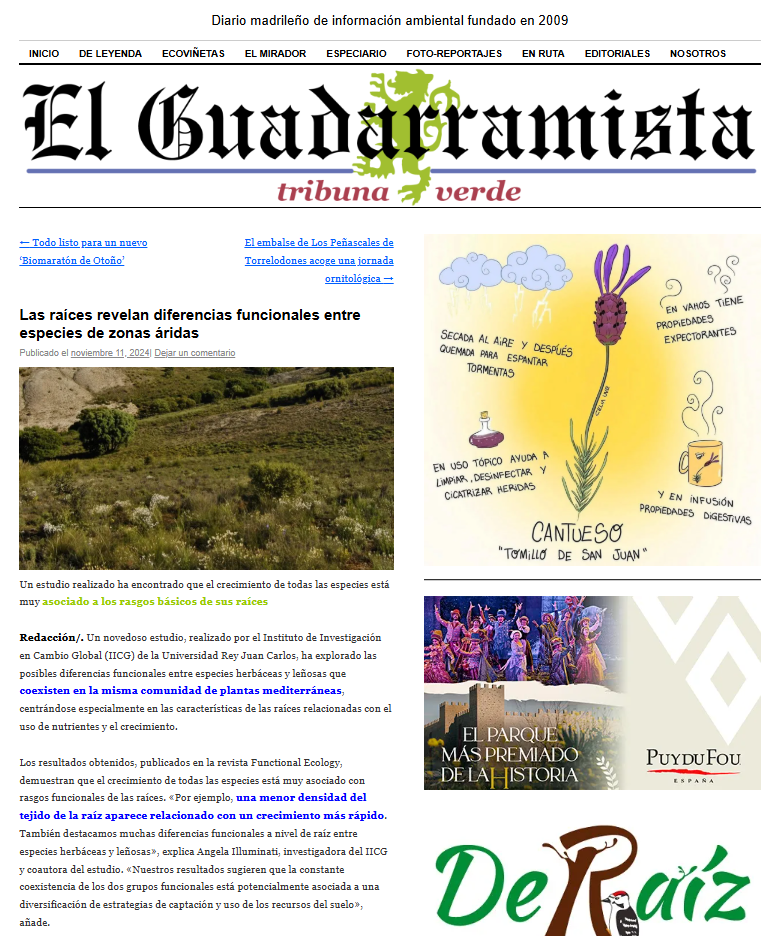

Jesús López Angulo
Community Ecology
Press Room
Press
-
2024
Las raíces revelan diferencias funcionales entre especies de zonas áridas

-
2023
Los policultivos pueden tener un rendimiento más estable frente a los monocultivos
-
2022
¿Cómo afectan las distintas partes de las plantas a los microorganismos del suelo?
Social Media Highlights
-
Instagram – Biodiversos URJC
Highlight post featuring the article published in the journal Ecosistemas
View on Instagram
-
Twitter – URJC Científica
Highlight post featuring the article published in Journal of Ecology
View on Twitter
-
Newsletter – IICG URJC
Monthly newsletter with updates about the IICG
Read the newsletter
-
Facebook – Cultura Científica URJC
Highlight post featuring the article published in Journal of Ecology
View on Facebook